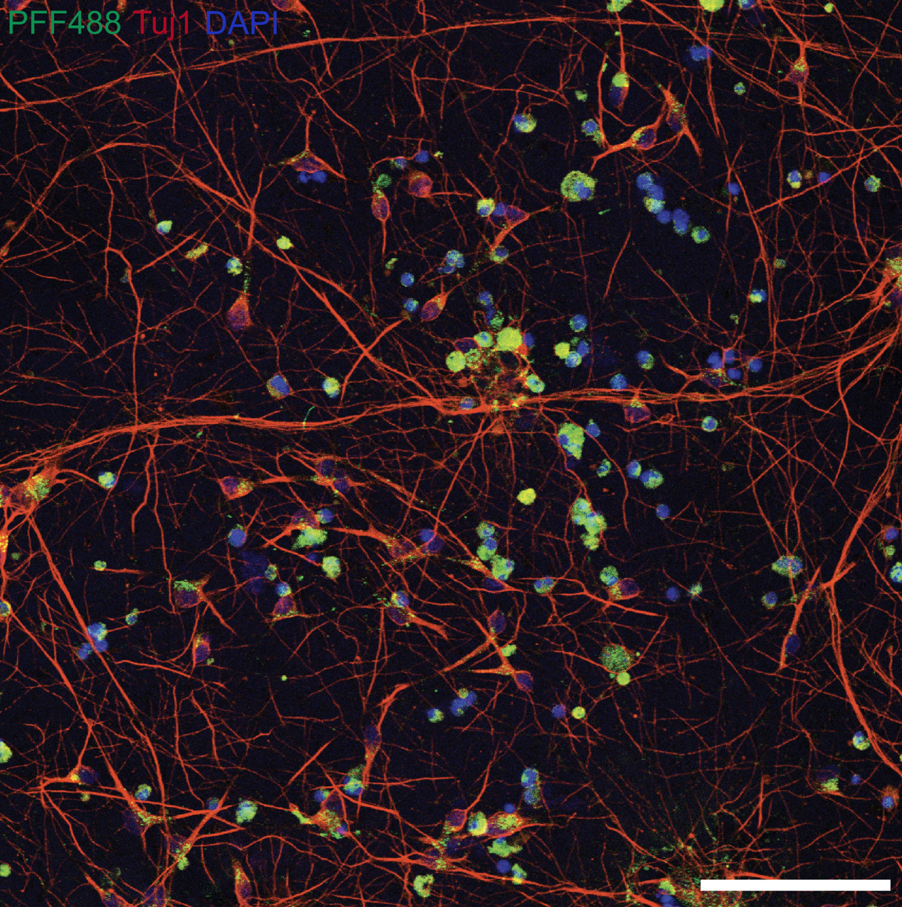
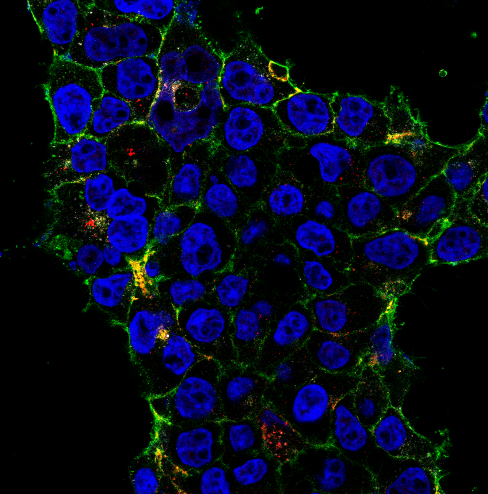
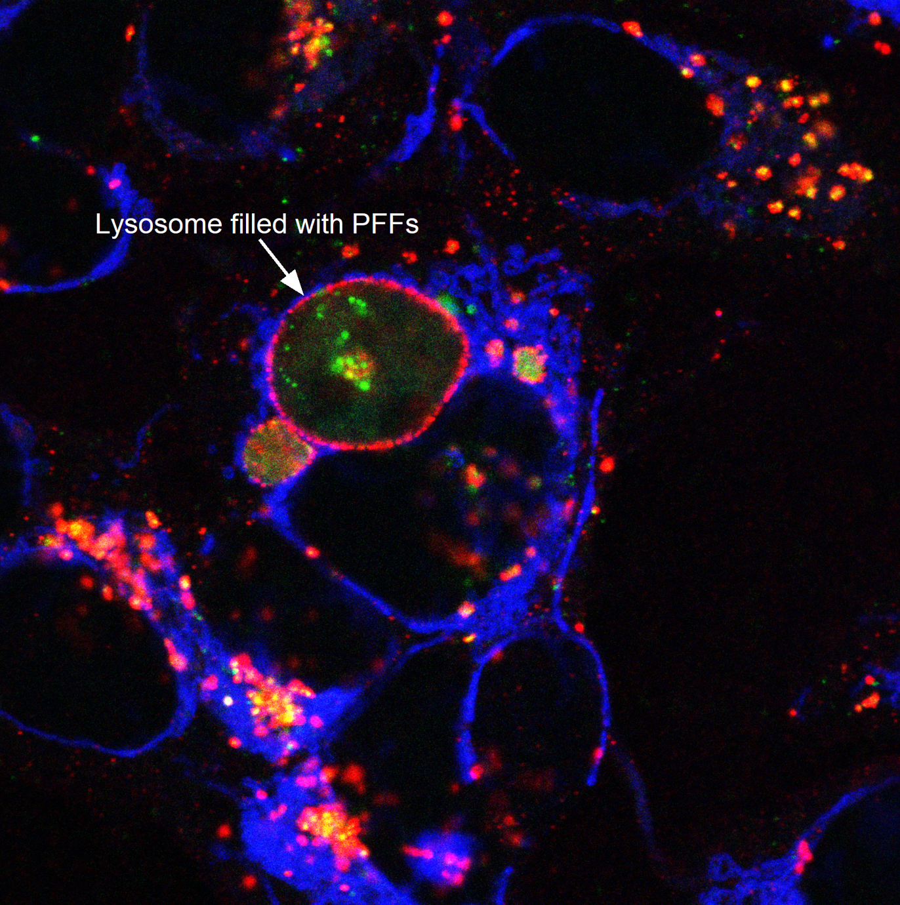
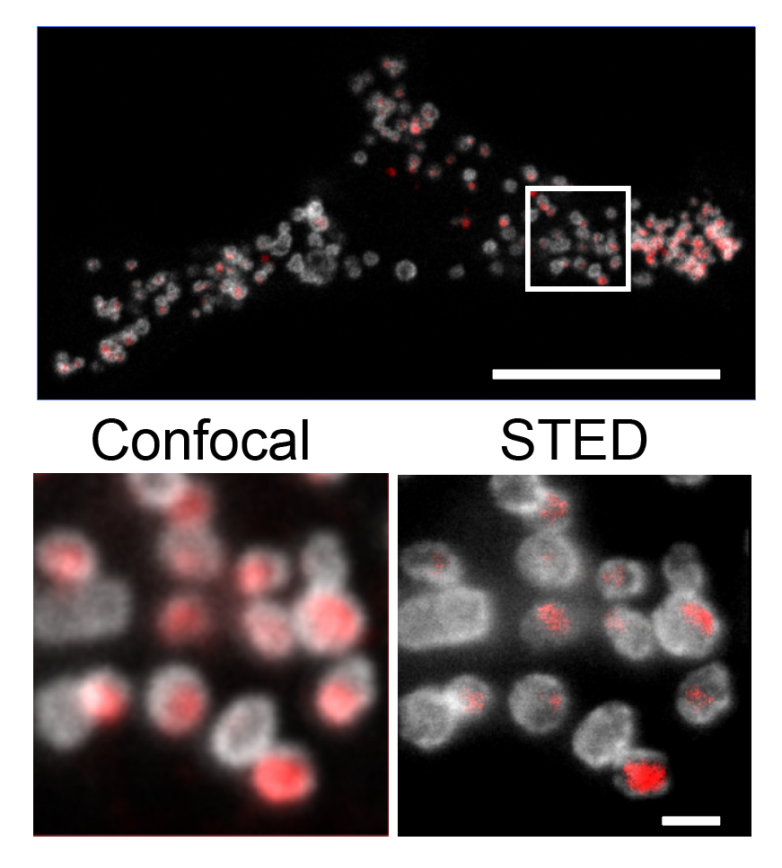
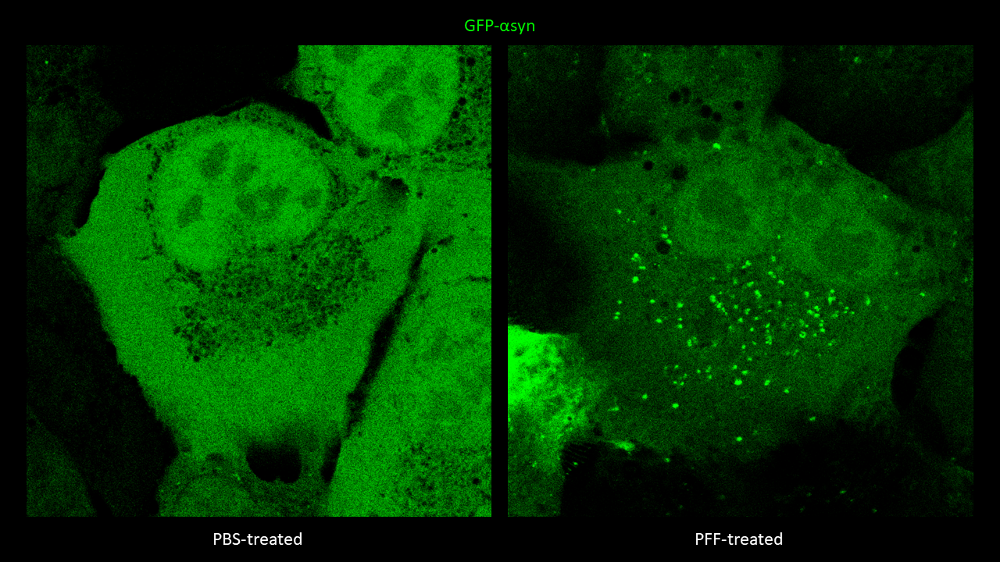
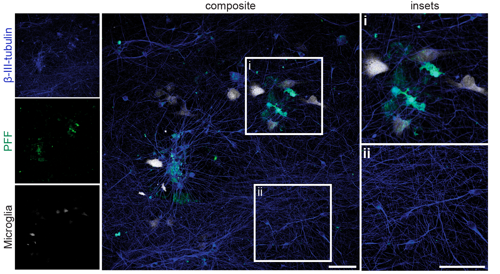
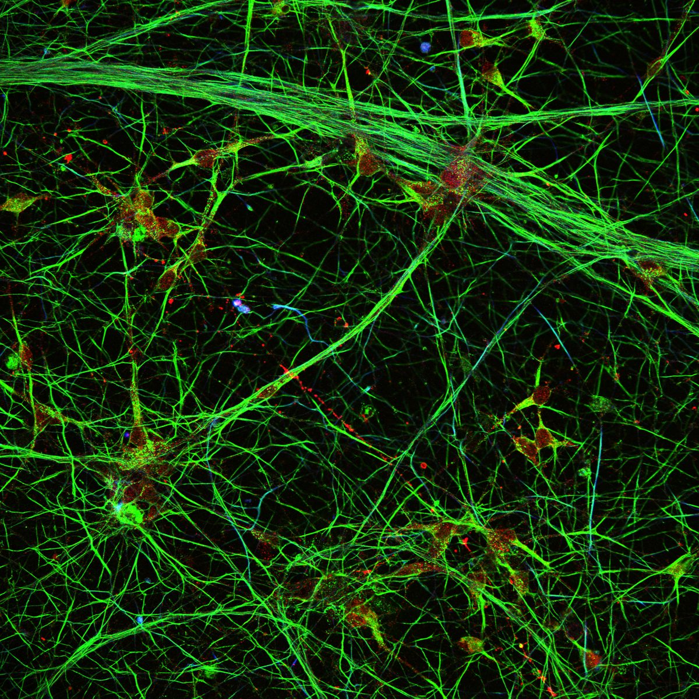
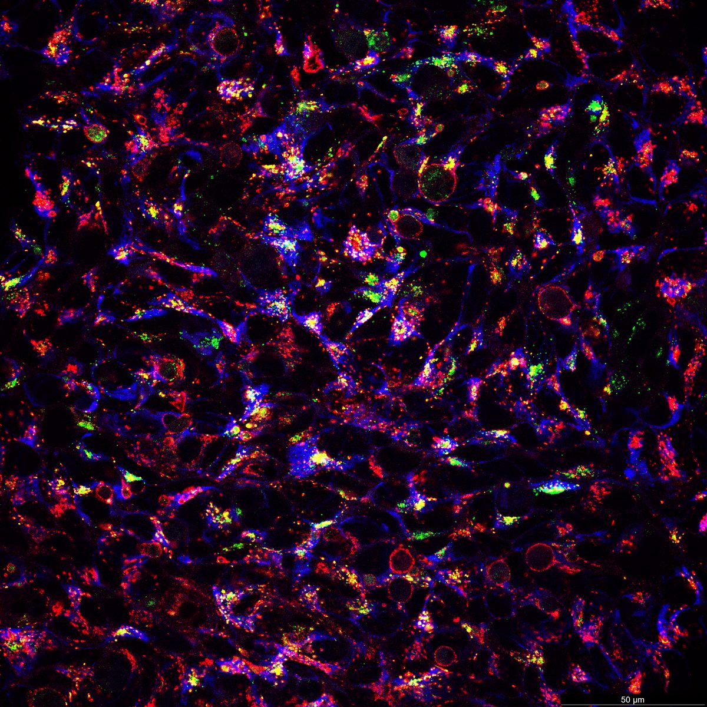
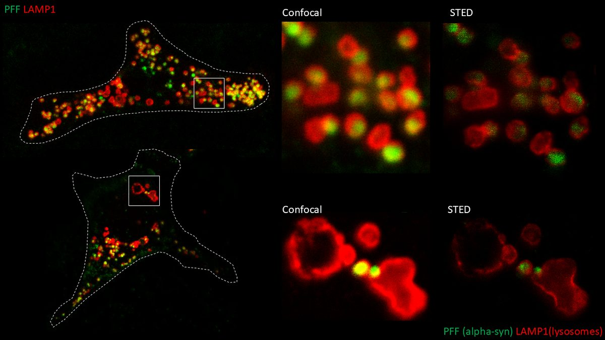

Confocal, Super-Resolution & Live-Cell
I perform confocal microscopy (Leica) for live and fixed samples, tracking rapid uptake of α-synuclein fibrils and spike protein internalization. STED microscopy (Abberior) resolves sub-lysosomal fibril localization. Zeiss Airyscan provides super-resolution for directional transport and spatial redistribution studies. TIRF (Nikon) for membrane-proximal events. Live-cell imaging captures dynamic processes: fibril internalization, lysosomal swelling, mitochondrial fragmentation, and Parkin translocation.
Confocal & Super-Resolution Gallery

1
2
3
4
5
6
7
8
9